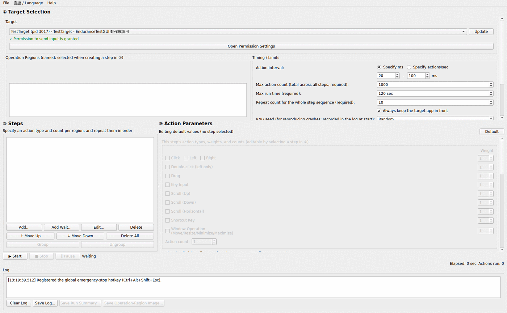
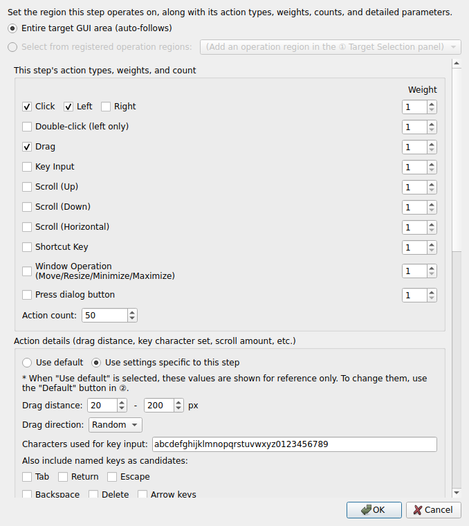
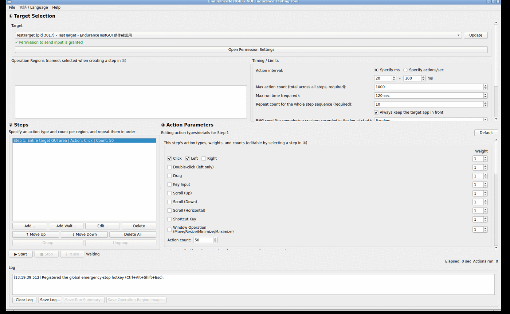
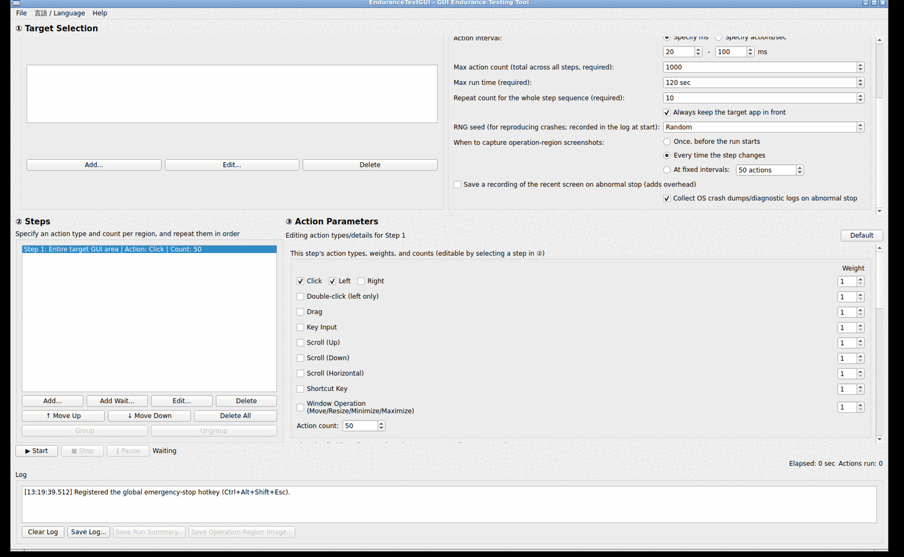
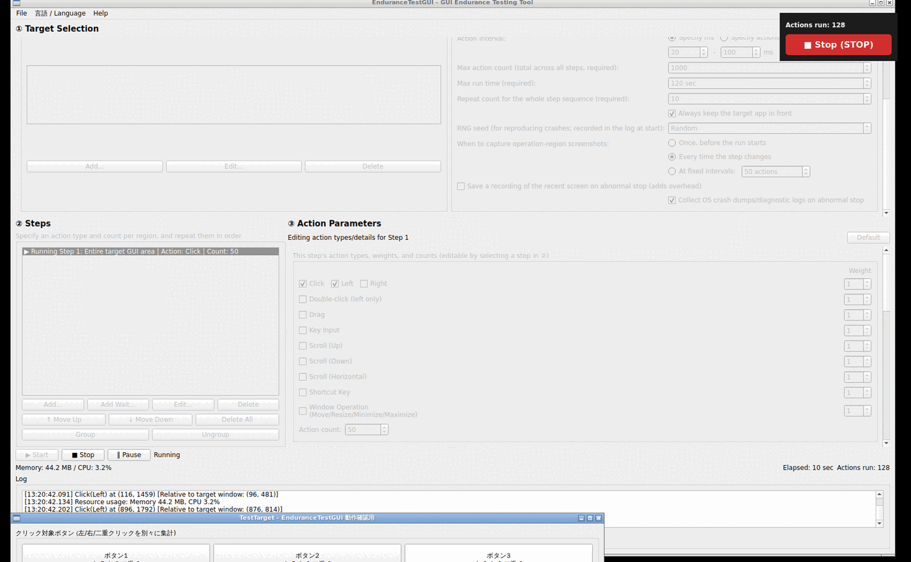
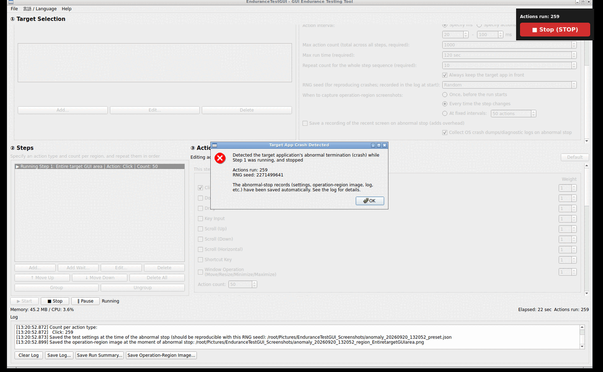
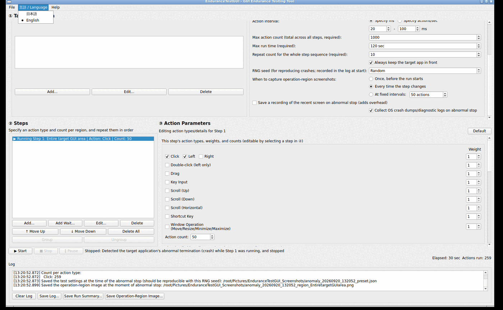

An endurance-testing tool that keeps sending random clicks and other actions to a GUI application, to check whether problems (crashes, freezes, memory leaks, etc.) show up after running for a long time.
EnduranceTestGUI is an endurance-testing tool that keeps sending random clicks, drags, key input, scrolling, shortcuts, and window operations to a target GUI application, within "operation regions" you define beforehand. It automates the kind of check that's tedious to do by hand: "does anything break if a button is pressed hundreds or thousands of times?"
A particular focus is making it possible to trace back what caused a problem after it happens. When the target app crashes, the tool automatically saves:
See Crash detection & re-testing for details.
Grant EnduranceTestGUI access under System Settings → Privacy & Security → Accessibility. If it isn't granted, a dialog prompting for permission appears when you try to start a run.
EnduranceTestGUI.app directly in Finder is the reliable way to launch it.
No special permission is needed for sending input itself (it works as long as it can reach the X server). Only the right-click context-menu item-selection feature requires the target app's toolkit to support AT-SPI accessibility. Wayland is not supported (X11, or an X11 app running under XWayland, only).
The window is divided into three vertical sections.

Choose the window you want to test from the "Target" dropdown. If it doesn't appear in the list, click "Update" to re-scan. Once selected, whether EnduranceTestGUI has permission to operate that app is shown in green (granted) or red (not granted); if not granted, "Open Permission Settings" opens the relevant OS settings screen.
Setting a path in "Target app auto-launch command (optional)" lets you try launching it manually at any time with "Launch now", and is also used by the continuous-run features described in "⑨ Starting and stopping the test". Checking "Launch the target tool with this command before starting" makes "▶ Start" launch the target app with this command first, wait for it to appear, and only then begin the startup setup and step sequence (the auto-launch command must be set when this is checked). Setting "Extra wait after target launch is detected" above 0 seconds waits that many extra seconds, after the target tool's window is detected, before actually starting the test. Use this for a tool that isn't ready to receive input right at launch, where starting immediately would otherwise fail the safety check (applies to continuous run, the automatic-relaunch wait, and the option above alike).
Some target apps require a fixed sequence of operations right after launch -- logging in, an initial-setup dialog -- before endurance testing by random actions can begin. Registering a sequence of actions in ①'s "Startup Setup" list runs them once, in order, right after the target app is confirmed running and before ②'s random actions begin.
1Clicking "Add..." opens a dialog for configuring one action. Choose a "Type": Click, Double-click, Right-click, Drag, Text Input, Key Input, Wait, Wheel Scroll, or Select Menu Item. "Wheel Scroll" takes a position, direction (up/down/left/right), and amount. "Select Menu Item" takes the right-click position and always selects the same one item from the menu it opens, specified either by item name or by position from the top (if the target app's menu contents vary from run to run and the specified item isn't found, the whole setup sequence isn't failed — the menu is just closed instead). The existing "Right-click" type always just dismisses whatever menu it opens, without selecting anything.
2For click-family actions and Drag, clicking "Select Position..." covers the whole screen in a translucent overlay -- just click the spot on the target app you want (no need to type coordinates by hand). The position is stored relative to the target window's top-left corner, so it stays correct even if the window has moved by the next run. Once picked, a small marker stays visible on screen at that position for as long as this dialog stays open (for Drag, both the start and end markers are shown, connected by a line), so you can confirm at a glance that the right spot was picked.
3The optional "Description" field (e.g. "Username field") makes entries easier to tell apart in ①'s list.
4Clicking "OK" adds it to the list. Use "↑ Move Up"/"↓ Move Down" to reorder, "Edit..." to change an entry, or "Delete" to remove one. "Clear All" empties the whole list immediately, with no confirmation prompt.
Checking "Only run on the first run of consecutive auto-execution (① batch)" makes the startup setup skip every automatic restart after the first one when you set ①'s "Batch run count" to 2 or more. Use this for something that only needs to happen once, like a license-agreement dialog that only appears the first time the app launches.
"● Record..." lets you build a whole startup setup sequence by actually performing it yourself, instead of adding entries one at a time. Clicking it shows a recording indicator panel in the top-right corner; while it's up, any mouse clicks, drags, or keyboard input you perform are appended to this list as you go, until you press Escape. This isn't limited to the target app's own window -- operating a dialog the target app opens (e.g. a confirmation dialog that appears after choosing a right-click menu item) is recorded the same way. Consecutive plain characters you type are recorded together as a single "Text Input" entry; Tab, Enter, arrow keys, etc. are each recorded as their own "Key Input" entry (a recorded click is always saved as a plain "Click" -- if you meant a double-click, change its type afterward via "Edit..."). Consecutive wheel notches are likewise coalesced into a single "Scroll" entry. If a left click right after a right click can be identified as picking an item from the menu that right-click opened, the two are recorded together as a single "Menu select" entry; when it can't be identified, they're recorded separately as an ordinary "Right Click" and "Click" instead. Recording ends when you press Escape, or click "■ Stop Recording" on the indicator panel.
"▶ Test Startup Setup" runs just this list's setup against the target window selected in ①, so you can check it actually works. It doesn't run ②'s step configuration at all, so ② doesn't need to be set up yet. The run stops automatically once it finishes, and the status area shows "Startup setup verification completed". Clicking it with no setup actions configured shows an error dialog instead.
A test is made up of one or more "steps" that run in order, repeating.
1Clicking "Add..." opens a small dialog for choosing which region this step will operate on. Choose either "Entire target GUI area (auto-follows)" or one of the named operation regions registered in ①, then click "OK".

2The step is added to the list and automatically selected. Its action types aren't decided yet at this point — that's configured next, in "③ Action Parameters".
Steps can be reordered within the list with "Move Up"/"Move Down", or multi-selected and combined into a single group with "Group" (members within a group are picked at random according to their weight). Multi-selecting and using "Task" combines steps the same way, but unlike a group, a task always runs every combined step exactly once, in the order they were added, and the whole run counts as a single "run count" — use this when you have a sequence of actions that must not be randomly reordered. For either a group or a task, selecting it and pressing "Ungroup"/"Untask" splits it back into its original individual steps. "Add Wait..." lets you insert a "wait step" that does nothing for a specified number of milliseconds.
The region-selection dialog shown when adding or editing a task's actions also offers "Target a newly appeared window (dialog, etc.) (auto-detected)". An action using this option operates on whichever window newly appeared besides the target app's main window — e.g. a confirmation dialog opened by a preceding action's context-menu selection — instead of any of the usual named/whole-window regions. If no such window has appeared yet when it's this action's turn to run, it automatically waits until one does.
Selecting a step in ② shows its settings in the ③ panel. Check the action types you want to enable (Click, Double-click, Drag, Key Input, Scroll, Shortcut Key, Window Operation), and specify how many actions to run for that step (Action count) and how likely each type is to be picked (Weight — higher means more likely).

Detailed settings for each action — click/drag distance and direction, which characters to use for key input, scroll amount, and so on — are also available further down the same panel. The "Default" button in ① lets you edit the shared initial values used for newly created steps.
The "Timing / Limits" area of panel ① sets the interval between actions (ms, or actions/sec), the max action count, max run time, and repeat count for the whole step sequence (all three are required — unlimited isn't an option), the RNG seed, and more. Scrolling down reveals the following additional settings.

| Setting | Description |
|---|---|
| RNG seed | Left as "Random", a new one is generated each run. Specifying a value lets the same action sequence be reproduced later (useful for reproducing a crash) |
| When to capture operation-region screenshots | Choose from: once before the run starts / every time the step changes / at fixed intervals. Captured images can be saved afterward via "Save Operation-Region Image..." |
| Save a recording of the recent screen on abnormal stop | Off by default. When enabled, keeps a rolling buffer of the screen at 0.5-second intervals (roughly the last 10 seconds) and automatically saves it as numbered PNGs on a crash |
| Collect OS crash dumps/diagnostic logs on abnormal stop | On by default. Makes a best-effort search for the target app's crash report/core dump and records the path in the log if found |
Once configured, click "▶ Start" to begin the run. While it's running, an always-on-top floating panel appears in the upper right (showing the action count and a "■ Stop (STOP)" button), so you can stop it immediately even if focus has moved to the target app. "‖ Pause" lets you pause and resume as well.
Setting "Repeat count" to 2 or more and clicking "▶ Start" automatically begins the next run (waiting for the target app to relaunch) each time one finishes, repeating that many times. If the target app is still alive when a run ends it's reused as-is; if it has gone, the next run starts once the auto-launch command (①) restarts it, or once a manual relaunch is detected. Separately, the "⟳ Continuous run" button always terminates the target app first — whether or not it's currently running — before launching a fresh instance and running the startup setup and step sequence, repeating that kill-then-relaunch cycle for "Repeat count" cycles. Use it when you want every run to start from a genuinely clean instance (the auto-launch command in ① is required for this button). Either mode can be interrupted at any time with "■ Stop".

For each action, the log records its coordinates, the coordinates relative to the target window, and (when available) the name of the UI widget that was clicked. The full log is also written incrementally to a file under ~/Documents/EnduranceTestGUI_Logs/, so even after older lines scroll out of the on-screen display (capped at the most recent 5000 lines), the complete history remains available afterward.
A run stops automatically when any of the following happens:
Running from a terminal without opening the GUI (CLI/headless mode): Given a preset JSON saved with "Save test settings...", running EnduranceTestGUI --run <preset.json> [--repeat N] in a terminal runs the same test with no window shown at all. It behaves exactly like the "⟳ Continuous run" button: it terminates the target app, launches it fresh with the launch command (which must be saved in the preset), and repeats that cycle --repeat times (default 1). All progress, action logs, and the run summary are printed to stdout, and the process exits automatically once every repeat has finished (or once an error makes continuing impossible). The exit code is 1 if any run was anomalous (e.g. a crash) and 0 otherwise, so a shell script or CI pipeline can check success directly.
When the target app's process is detected as gone, the run stops immediately and a dialog like the following appears.

Both the dialog and the log show which step was running when the crash was detected, how many actions had run so far, and the RNG seed. At the same time, a JSON snapshot of the test settings (with that seed), a screenshot of the operation region, a recording of the recent screen (if enabled), and the location of the OS's crash dump (if found) are all saved automatically under ~/Pictures/EnduranceTestGUI_Screenshots/.
"Save Test Settings..." in the "File" menu saves the operation regions, step configuration, and timing settings assembled in ①②③ together into a JSON file. "Load Test Settings..." loads it back and, if the app it was targeting when saved is currently running, automatically selects it again (otherwise a message prompts you to pick it manually). This lets the same configuration be reused across sessions or across different builds, without rebuilding it from scratch each time.
Choose "日本語" or "English" from the "言語 / Language" menu in the menu bar. Your choice is saved and takes effect from the next launch onward (the currently running window doesn't switch live).

Check that the target window isn't covered by another window and isn't minimized. If that doesn't help, some environments (particularly certain tiling window managers on Linux) don't support the mechanism used to confirm the target app can be operated safely at all.
Click the "Update" button in ① to re-scan. Only normal top-level windows are listed.
This is an experimental feature that relies on macOS/Linux accessibility support. On Linux, the target app's toolkit needs to have its AT-SPI bridge enabled (GTK/Qt apps usually have this on by default).
EnduranceTestGUI's own source code is released under the MIT License (see LICENSE at the repository root). The app uses Qt (the Widgets module); the free-software edition of Qt is distributed under the GNU LGPL version 3 (some modules under the GPL). You can always check exactly which license the Qt build in use is distributed under from "Help" → "About Qt..." inside the app itself. For details on the other dynamically linked libraries, see THIRD_PARTY_NOTICES.md at the repository root.